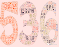
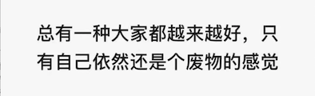
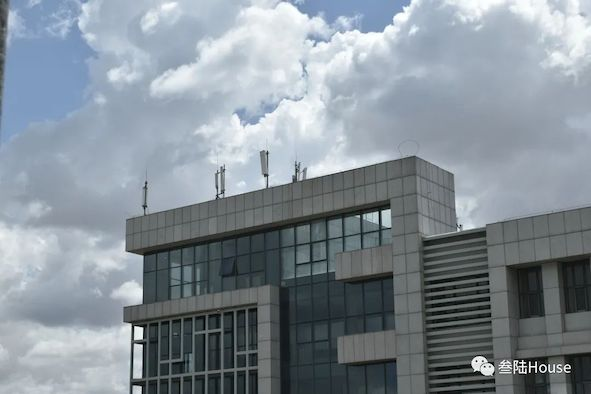

那年夏天的蝉鸣比哪一年都聒噪，教室窗外枝丫疯长，却总也挡不住烈阳，柏油路依然长的没有尽头，白杨树依然枝繁叶茂，骄阳正好，风过林梢，彼时他们正当年少。
一提536,感觉这几个数字是在心中用小蔡的声音念出来的，人们说忘记一个人最先忘记的是声音，还好我记着。
想念小琴课上的辛辣调侃，想念老蔡课上的激情飞扬，想念波波老师课上的抑扬顿挫……
我无比怀念那个大大的校园；无比怀念那间三楼的教室；无比怀念那个饭菜飘香的食堂；无比怀念那群意气风发的老师；我无比怀念那群一起笑过的少年……可是，我回不去了。
前些天跟室友路过一大片草地的时候,就突然想和536再去一次草原...
田某，兼职剧本杀，套路起了小妹妹；有的人则是人在课堂心在飞，考试将至我挑灯熬夜，如…嗯～；有的人探索着大学的知识海洋，相信君姐依旧；有人在大学参与各种活动忙里忙外，奔波劳碌着，如敏姐，还不时调侃着皓博的“见多识广”，“那个蓝个蛋是甚了”；有的人也与喜欢的她一起甜蜜努力着，某“社会”童还有最近“意气风发”杨矿长；当然也有的人在诉着“旱的旱死，涝的涝死”的苦，如身处杭州，优中选优抱怨的耀呲以及日日渴望的崔哥；当然也有每日王者群里异常活跃的尊傲与彤姐是如此悠闲，还有差点“海训”的依旧帅酷的浩卓，当然还有许多许多……
刚来的时候，确实心是野的，无限憧憬无限向往的大学生活毕竟开始了嘛。然后发现，苦难的军训生活过完了以后，我要上七点的早自习，晚自习上到晚上九点半，我的脸上立马写满问号：嗯？梦到高四了？ 连上三大节，头晕脑胀跑下一个教室甚至下一栋楼，再上三大节，上完马不停蹄干饭，再大老远的回宿舍短暂午休，那课表是没满吧，但是干部工作和社团任务塞得满满的，过的连高三都不如啊！微笑.JPG

故事的开始，是那年夏天我们踏进这所崭新的学校，听着操场上的人们抱怨着，嬉笑着。
故事的结束，同样在夏天，同样是在操场上的我们，或许再也没有机会抱怨，课间操太累，他们太傻。
过去再美好终是过去，未来再艰难仍要向前。没有人可以一直活在回忆里，大家都在向前走，或许在某个夜深人静的漫漫长夜里，突然看到照片，突然想起我们，心里还有满满的幸福感，力量感，便足矣。
阳光 迟到 操场 背影 下课 走廊 相遇 小卖部 偷看 侧脸 对视 躲闪 暗恋 心动 晚自习 三年
所有的故事，所有的心动，所有的懵懂，所有的快乐，留在了那三年，装饰了那三年，也造就了未来的我们。不仅仅是知识，更是品格，是那句“犯其至难，图其至远”；是那句“……”；是那些潜移默化刻在你骨子里的叁陆烙印；是无论遇到什么想起高中生活便觉得不过如此；是不论多么无助告诉同学就觉得有你们真好。
关关难过关关过，前路漫漫亦灿灿。我们叁陆人即使遍布天南海北，即使未来颇多波折，我相信，也都终会在自己的领域里闪闪发光。下次再见时，定是春暖花开，万物明朗，你我，未来可期。
——刘书瑶